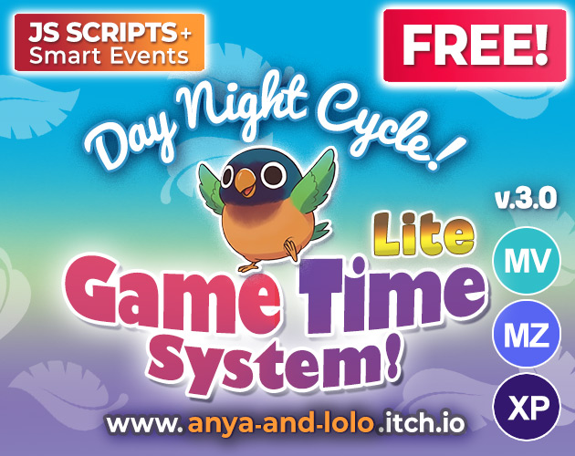
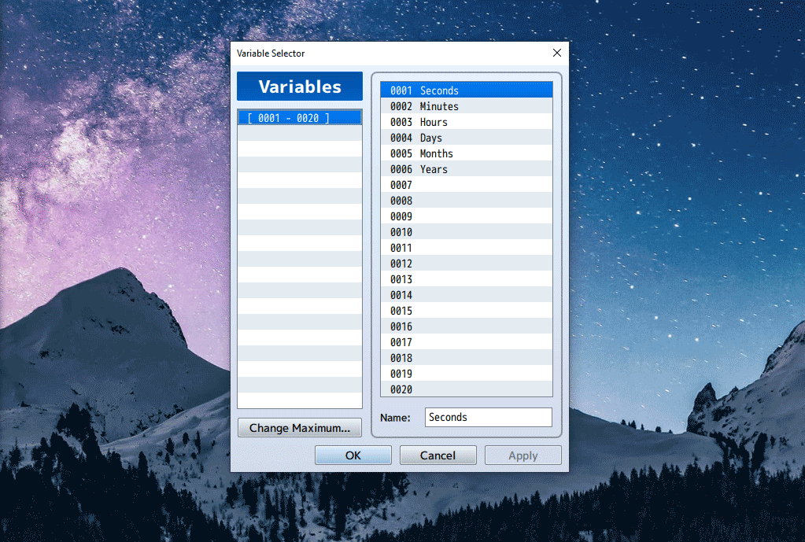
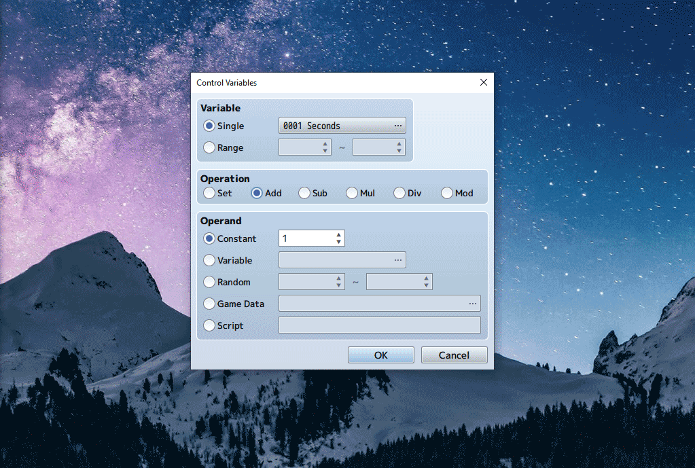
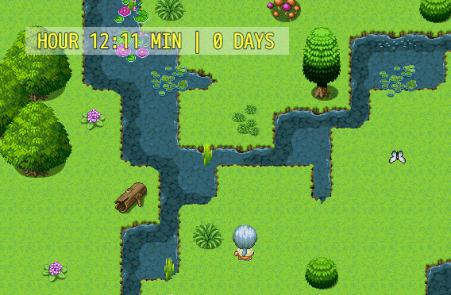
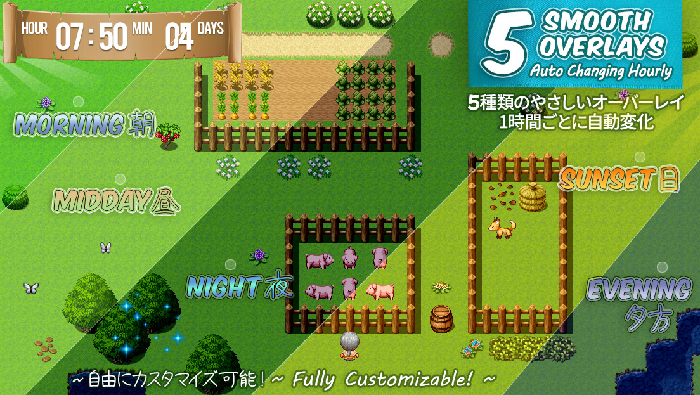
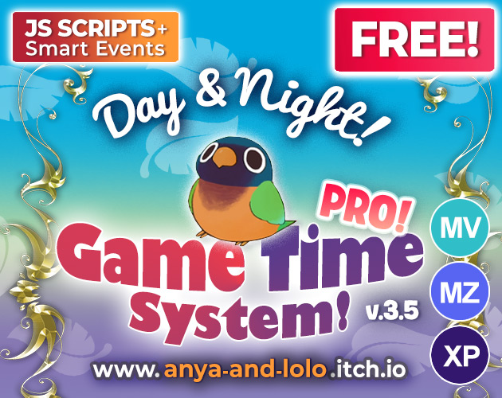

Day & Night Cycle
Build a real in-game clock + smooth day/night tint (works in any RPG Maker engine) 💛

Today we’re building
What events you’ll create
Handles Seconds → Minutes → Hours → Days rollover logic. This is the heart of your clock.
Checks the current Hour and applies the correct screen tint (Night, Sunrise, Day, Sunset, Evening).
Sets the starting time (example: 12:00 PM) and applies the correct tint before gameplay begins. Then disables itself using a Self Switch.
Video walkthrough
Before we start
Open the provided demo file for your engine. The key event commands are placed on the demo map for learning (one Autorun + two Parallel events). You can move them to Common Events later for multi-map projects.
Create the events manually in your own project. A clean way is placing the setup events in the top-left corner of a map first, then moving them into Common Events once you’re happy.
Part 1. Create the game time (Seconds, Minutes, Hours)
60 Minutes: +1 Hour, reset Minutes to 0
24 Hours: +1 Day, reset Hours to 0
(Optional) 12 Months: +1 Year
Make a new event and set Trigger to Parallel. This event will run continuously and update your variables.
Create variables for: Seconds, Minutes, Hours, Days, and optionally Months, Years.
In your Parallel event, do:
Control Variables → Seconds → Add Constant 1Now Seconds will increase as the event runs.
Add a Conditional Branch: If Seconds ≥ 60 then:
Minutes += 1, and Seconds = 0.
Do the same rollover logic:
If Minutes ≥ 60 then Hours +1 and reset Minutes,
then If Hours ≥ 24 then Days +1 and reset Hours.
Preview


Part 2. Time Display (so we can see it working)
Place a simple object event (like a sign) and show a message using Show Text command that display your variables.
\V[1]Seconds | \V[2]Minutes | \V[3]Hours | \V[4]Days | \V[5]MonthsPlaytest! Click several times on a signpost. If numbers change, your clock is ticking:
25 Seconds | 17 Minutes | 12 Hours | 1 Days | 0 MonthsUse a Dynamic Text Picture approach (MV users: TextPicture plugin). Turn it ON in Plugin Manager, then: add a Plugin Command that defines your text, and use Show Picture without selecting an image.
Example: Hours is variable 3, Days is variable 4, then write \V[3] (or \V[003]) to display it.
You can also add colour with \C[].
\C[17]HOUR \V[3]:\V[2] MIN | \V[4] DAYS \C[0]Preview

Part 3. Smooth Day/Night Tint (based on Hours)
5 → 8 = Sunrise
8 → 18 = Daytime
18 → 20 = Sunset
20 → 24 = Evening
Make a second Parallel event (or Common Event) that checks Hours and applies the correct tint.
Build branches like: If Hours ≥ 20 then Evening tint, Else If Hours ≥ 18 then Sunset, Else If Hours ≥ 8 then Day, Else If Hours ≥ 5 then Sunrise, Else → Deep Night.
Preview

Part 4. Start the game at a specific time (like 12pm)
Set the event trigger to Autorun, set Hours/Minutes to what you want (example: 12:00), and apply a Daylight tint so you don’t start with night colours.
Add a new page conditioned by Self Switch A, and turn Self Switch A ON at the end, so the Autorun doesn’t freeze the game.
Part 5. Optimization (make it run smooth)
✔ Minimize frame checks
✔ Use Wait commands strategically
A Wait(60) at the end of your Parallel event prevents the engine from running checks 60 times per second. It keeps the system smooth without unnecessary processing.
Your tint event is also Parallel, without a wait, it can keep reapplying tint constantly. Add a Wait command to limit checks and avoid draining resources.
Free extras! Make events react to time
Use switches/branches to make windows open/close, lanterns light at night, fireflies appear, or shops open between set hours.
Preview
